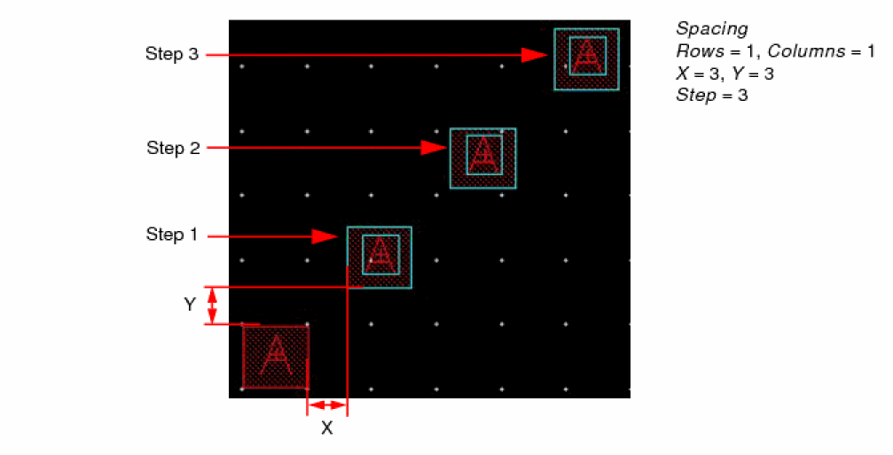
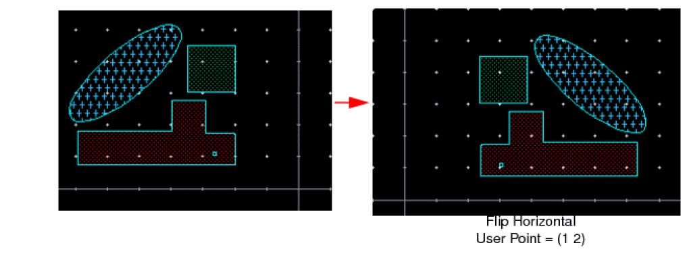
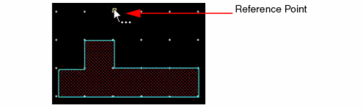
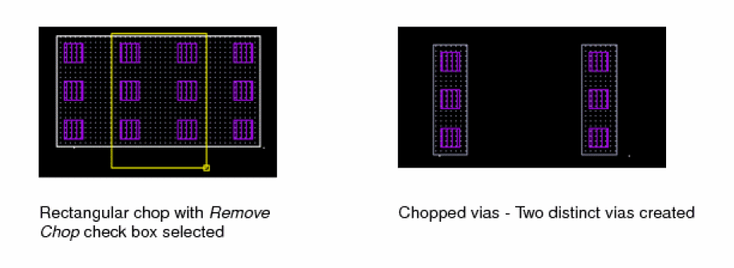
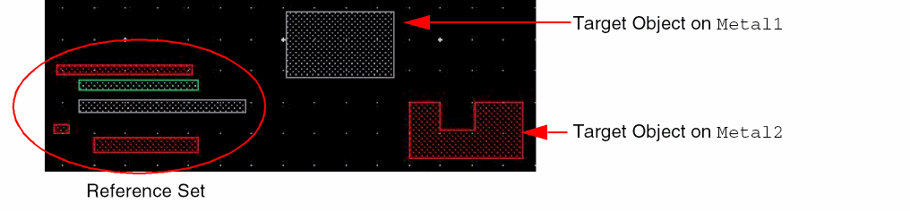
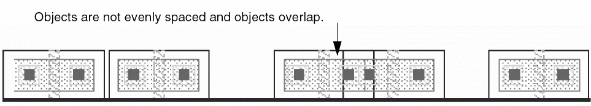
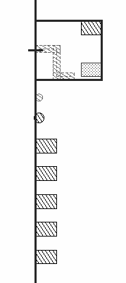
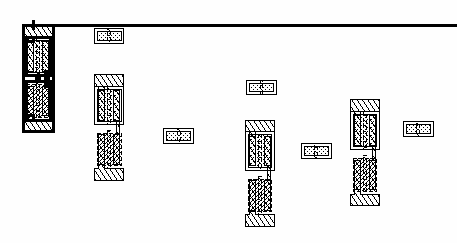

7
Editing Objects
This chapter contains these topics about the Virtuos® Layout Suite L layout editor:
- Undoing and Redoing Commands
- Moving Objects
- Copying Objects
- Stretching Objects
- Deleting Objects
- Copying Objects in Repeat Mode
- Flipping Objects
- Rotating Objects
- Chopping Objects
- Merging Objects on a Layer
- Yanking and Pasting Objects
- Editing Instance Properties
- Reshaping Objects
- Splitting Objects
- Modifying Corners
- Sizing Objects
- Attaching and Detaching Objects
- Converting Instances to Mosaics
- Converting Circles, Donuts, and Ellipses to Polygons
- Converting Polygons to Paths
- Changing Origin
- Aligning Objects
- Editing Slots
- Hierarchical Editing
- Editing Groups
- Selecting Objects
- Deselecting Objects
Undoing and Redoing Commands
For information about the Undo and Redo commands, see Undoing Commands and Redoing Commands.
Moving Objects
The Move command lets you move an object to another location in this or another cellview.
Moving Objects by Direct Manipulation
You can move objects by selecting and dragging them.
- Select an object. Alternatively, you can select an object by specifying the points at which the object is placed in the design area using the Enter Points form. For more information, see Enter Points Form.
-
Move the pointer over the object to see the move pointer.
-
Press the left mouse button at the reference point for the move (the point from which the move starts) and drag the pointer to the destination point. Alternatively, you can specify the reference and destination points for the move using the Enter Points form. For more information, see Enter Points Form.
-
Release the left mouse button.

Moving Objects By Using the Move Command
To move objects using the Move command,
-
Choose Edit – Move [
m] or click the Move icon on the Edit toolbar.
Alternatively, right-click at any free space in the design canvas to display the Layout context menu and select Move. -
Press F3 to open the form.
The Move Form opens. -
Select one or more objects. If you create a selection box or press
Shiftwhile selecting all objects, the Move command prompts you for a reference point. If you click an object, the point (Pt, in the figure below) is taken as the reference point. - Click the reference point for the move (the point from which the move starts). Alternatively, you can specify the reference point for the move using the Enter Points form. For more information, see Enter Points Form.
-
Click where you want to move the objects. Alternatively, you can specify the point where you want to move the objects using the Enter Points form.
Moving or Copying Objects to Another Layer
To move or copy objects to another layer,
-
Choose Edit – Move [
m] or Edit – Copy [c]. Press F3 to open the form.
The Move Form or Copy Form opens. - Set Change Layer on.
- Click the layer field and choose the layer you want.
- Click the object whose layer you want to change.
-
Click where you want to move or copy the object.
The object is moved or copied and is now on the new layer.
Moving Objects to Another Cellview
To move objects to another open cellview,
- Select the objects you want to move.
-
Choose Edit – Move [
m].
The Move Form opens. - Place the pointer in another open cellview.
- Click to place the objects.
Moving Multipart Rectangles
When you move a multipart rectangle within a cellview, the master rectangle and all of its associated arrays of subrectangles move together. You cannot move a master rectangle separately from its associated subrectangles, nor can you move subrectangles separately from their master rectangle.
When you move a multipart rectangle that has objects aligned to it, the objects move to stay in alignment with the multipart rectangle.
-
Choose Edit – Move [
m]. -
In full selection mode, choose the multipart rectangle by clicking on the master rectangle or any subpart.
- Click to place the multipart rectangle; the aligned objects follow.
The multipart rectangle and all objects aligned to it appear in the new location.
Copying Objects
The Copy command enables you to place a copy of an object in a cellview. You can copy an object to the same cellview or to another cellview.
-
Choose Edit – Copy [
c] or click the Copy icon on the Edit toolbar.
Alternatively, right-click in an empty space in the design display area and choose Copy from the Layout context-sensitive menu. -
Press
F3to open the form.
The Copy Form opens.
- Select the Keep Copying check box if you want to create multiple copies of an object.
- In the Snap Mode list, select an option based on the direction in which you want to move the copied object.
- Select the Change To Layer check box if you want to copy an object to a different layer, and in the associated list, select the required LPP.
- Specify the number of rows and columns if you want to create an array of copied objects. For more information, see Creating an Array of Copies.
- In the Chain Mode list, select the appropriate option if you want to copy a chain of instances.
-
In the design display area, select one or more objects by using one of the following methods:
-
To select a single object, click it. Alternatively, you can select an object by specifying the points at which the object is placed in the design area using the Enter Points form. For more information, see Enter Points Form. To select multiple objects, hold down the
Shiftkey and click the required objects, one at a time.
A copy of the selected object appears in the design display area, attached to the pointer. This copy stays attached to the pointer and moves when you move the pointer. The Copy command prompts you to click at the location where you want to place the copy. -
Drag the pointer over the objects you want to select. You can add more objects to the selected set by holding down the
Shiftkey and then clicking the required objects or by dragging the pointer over the required objects.
The Copy command prompts you to click to specify a reference point.
-
To select a single object, click it. Alternatively, you can select an object by specifying the points at which the object is placed in the design area using the Enter Points form. For more information, see Enter Points Form. To select multiple objects, hold down the
-
Click in the design display area to place the copy. Alternatively, you can specify the points at which you want to place the copy using the Enter Points form. For more information, see Enter Points Form.
-
Press
Escor click Cancel in the form to finish copying.
The following example illustrates the creation of multiple copies of pinA on Metal1, where the copies are placed on different layers, Metal3 and Metal4. In the Copy form, select the Keep Copying check box and set Snap Mode to anyAngle. Select the Change To Layer check box, and in the associated list, select Metal3. Select pinA. A copy of the pin attaches to the pointer. Notice that pinA remains selected.
Click in the design display area to place the first copy. Notice the change in the LPP of the copy you place. Copy remains attached to the pointer.
Click in the design display area to place the second copy, also on Metal3.
Next, press F3 to display the Copy form and select Metal4 from the Change To Layer list. As a result, the next copy will be placed on Metal4. Click in the design display area to place the copy. Press Esc to finish creating the copies.

If the enableCopyAndPaste environment variable is enabled (t), in the Copy command, the selected objects and the reference point are automatically stored in the buffer after the reference point for the copy command has been specified. You can use the Paste command to paste the objects stored in the buffer. The Copy and Yank commands use the same buffer to store objects.
Creating an Array of Copies
The array of copied objects is flat, that is, all objects in the array can be selected individually. The array can be placed only in the original cellview; it cannot be copied to another cellview. You can create the following types of arrays:
- Creating an array without specifying the distance between the copies
- Creating an array by specifying the corner-to-corner distance between the copies
- Creating an array by specifying the edge-to-edge distance between the copies
-
Creating multiple, overlapping copiesIn the pre-selection mode, all copies of the array are selected in the end. The original object is not selected. In the post-selection mode, no object remains selected after the copies are placed. The object you copy is part of the resultant array only when you specify the corner-to-corner (Delta) or edge-to-edge (Spacing) distance.
Creating an array without specifying the distance between the copies
- Select the object to copy.
-
Choose Edit – Copy and press
F3to open the Copy Form. -
In the Rows and Columns fields, type the number of rows and columns you want in the array, say
3rows and3columns. -
Click to place the first object of the array.

-
Click to place the second column of the array.
The rest of the columns are automatically placed. The distance between the first and second copies controls the spacing and orientation of the remaining columns.
-
Similarly, click to place the rows of the array and complete the array.
The distance between the first and second rows controls the spacing and orientation between the remaining rows.

Creating an array by specifying the corner-to-corner distance between the copies
- Select the object to copy.
-
Choose Edit – Copy and press
F3to open the Copy Form. - In the Rows and Columns fields, type the number of rows and columns you want in the array.
- Select the Delta check box.
-
Specify the required distance in the X and Y fields.
-
Click Apply.
An array with the specified settings is created. The object you copied is part of the array.
To apply the corner-to-corner spacing while creating copies in a series of steps:
- In the Copy form, ensure that the Delta check box is selected.
-
In the Rows and Columns fields, type
1. - In the Step field, specify the number of copies you want to create.
- In the X and Y fields, specify the required values.
-
Click Apply.
Copies of the selected object are created in steps.
Creating an array by specifying the edge-to-edge distance between the copies
- Select the object to copy.
-
Choose Edit – Copy and press
F3to open the Copy Form. - In the Rows and Columns fields, type the number of rows and columns you want in the array.
- Select the Spacing check box.
-
Specify the required distance in the X and Y fields.
-
Click Apply.
An array with the specified settings is created. The object you copied is part of the array.
To apply the edge-to-edge spacing while creating copies in a series of steps:
- In the Copy form, ensure that the Spacing check box is selected.
-
In the Rows and Columns fields, type
1. - In the Step field, specify the number of copies you want to create.
- In the X and Y fields, specify the required values.
-
Click Apply.
Copies of the selected object are created in steps.

Creating multiple, overlapping copies
- Select the object to copy.
-
Choose Edit – Copy and press
F3to open the Copy Form. - Select the Exact Overlap check box.
-
Specify the number of copies in the Step field.
- Click Apply.
Multiple, overlapping copies are created. Drag the copies to place them as required.
Copying Objects to Another Cellview
To copy objects to another open cellview,
- Select the objects you want to copy.
-
Choose Edit – Copy [
c]. - Move the pointer into another open cellview.
- Click to place the copies.
Copying Cellviews Across Libraries
You can use one of the following ways to copy a (layout) cellview from a source to a target library:
- Copy using the Library Manager.
- Copy using the SKILL API dbCopyCellView.
- Copy portions of a source layout cellview to a target layout cellview using the interactive Cellview-to-Cellview Copy command in Virtuoso.
In the IC6.1 environment, if the source and target libraries are attached to different technology libraries, then these two technology libraries are compared against each other before performing the copy operation. If inconsistencies are found between the two technology libraries, the copy operation is not performed.The comparison is done to prevent future problems with the copied cellview.
During the copy operation, the following components of the source and target technology libraries are compared:
- dbuPerUU and userUnits
- Layer Names and Layer Numbers
- Purpose Names and Numbers
- Name, types, layer names and numbers of all viaDefs
- Name, types, width, and height of all siteDefs
- Names of array siteDefs
Stretching Objects
The Stretch command lets you stretch an edge or corner of an object.
| Support for Objects | |
|
The Stretch command fully supports ROD objects. For more information about stretching Pcells, see |
|
|
The Stretch command stretches blockages (except for placement halos) in the same way it stretches a polygon, using points. |
|
|
The Stretch command stretches boundaries in the same way it stretches a polygon, using points.
|
|
|
The Stretch command can be used to expand or shrink mosaics. The number of rows or columns increase or decrease according to the stretching direction and the target location.
|
|
|
The Stretch command can be used to expand or shrink vias in X or Y direction when the Via Partial Selection option is selected on the Selection Options form. The number of rows or columns increase or decrease according to the stretching direction and the target location. |
|
This topic covers the following:
- Stretching Objects by Direct Manipulation
- Stretching a Circle
- Changing the Angle of Corners
- Stretching and Moving Objects
- Stretching Paths
- Stretching Multipart Rectangles
Stretching Objects by Direct Manipulation
You can stretch objects by selecting and dragging their edges or corners.
-
Choose Edit – Stretch or click the Stretch icon on the Edit toolbar.
Alternatively, right-click at any free space in the design canvas to display the Layout context menu and select Stretch. -
Press F3 to open the form.
The Stretch Form opens. -
Select one or more edges or corners as follows:
In partial selection mode, if you press
Shiftand click an edge or corner, that edge or corner is the reference point for the stretch.
If you create a selection box around the edges, Stretch prompts you for a reference point. The reference point does not have to be on the selected shapes. -
Move the pointer over the edge until you see the stretch pointer:

- Click and drag the pointer to stretch the object.
-
Release the mouse button.
Stretching a Circle
Circles are special cases of ellipses, so that if you stretch a circle it will not remain a circle, unless you use one of the correct methods. There are two ways to stretch a circle so that it will remain a circle.
- Set the Display Options Edit Snap Mode to diagonal.
- Set the Selection mode to Partial.
-
Select one corner (the vertex) of the circle, as shown below:
-
Move the mouse pointer to the vertex edge until you see the stretch pointer, as shown below:
You can enlarge or shrink the circle by moving the stretch pointer, and the circle will remain a circle if you stretch at a 45-degree angle, however, the origin point of the circle will not remain the same.
Stretching a Via
Partially selected vias can be stretched in X or Y direction.
- In the Selection Options form, select Via Partial Selection.
-
Choose Edit – Stretch or click the Stretch icon
 on the Edit toolbar.
on the Edit toolbar.
Alternatively, right-click at any free space in the design canvas to display the Layout context menu and select Stretch. -
Press F3 to open the form.
The Stretch Form opens. - Select the corner of the via that you want to stretch.
- Move the pointer over the edge until you see the stretch pointer.
- Click and drag the pointer to stretch the via. You can stretch the via in X or Y direction.
- Release the mouse button.
Changing the Angle of Corners
To change the angle of a corner by stretching,
-
Choose Edit – Stretch [
s] or click the Stretch icon on the Edit toolbar.
Alternatively, right-click at any free space in the design canvas to display the Layout context menu and select Stretch. -
Press F3 to open the form.
The Stretch Form opens. - Turn Lock Angles off.
-
Stretch the corner where you want and click.
Stretching and Moving Objects
You can simultaneously stretch and move objects. This is often called a window stretch.
-
Choose Edit – Stretch [
s] or click the Stretch icon on the Edit toolbar.
Alternatively, right-click at any free space in the design canvas to display the Layout context menu and select Stretch. -
Press F3 to open the form.
The Stretch Form opens. -
Press
Shiftand create a selection box around the objects you want to move and the edges you want to stretch.
- Select a reference point for the stretch.
-
Move the pointer to stretch the edges where you want.
-
Click.
Stretching Paths
You can stretch the ends, segments, and/or corners of a path. You stretch ends and corners in the same way you stretch any other object. To stretch segments, you need to select the path centerline in the segment(s) you want to stretch.
The resultant of stretching a path should not be malformed or self-intersecting (one with overlapping edges). A resultant path with coincident edges (abutted edges) can be manufactured and is allowed.
-
Choose Edit – Stretch [
s].
Stretch automatically changes to partial selection mode and prompts you to select the object you want to stretch. -
Select one or more segments by doing one of the following:
-
For a single segment, click the middle of the centerline of the segment or create a selection box around the centerline of the segment, making sure to include the ends of the segment centerline.Highlighting shows the path segment is selected.

-
For multiple segments, to add another segment, press
Shiftand click or create a selection box around the centerline of the segments, making sure to include the ends of the segment centerlines.
-
For a single segment, click the middle of the centerline of the segment or create a selection box around the centerline of the segment, making sure to include the ends of the segment centerline.
- If you are prompted for a reference point, click where you want the stretch to begin.
-
Point to the new location for the stretch and click.

-
To end the Stretch command, press
Escape.
Stretching Multipart Rectangles
You can stretch the edges and/or corners of a master rectangle of a multipart rectangle in the same way you stretch regular rectangles, click an edge or corner, then click at a new location. The system regenerates the arrays of subrectangles associated with the stretched master rectangle. How the subrectangles regenerate depends on the definition of the multipart rectangle. You cannot stretch a master rectangle separately from its associated arrays of subrectangles, nor can you stretch an array of subrectangles separately from its master rectangle.
For information about defining multipart rectangles, see “
To stretch an edge of multipart rectangle,
-
Choose Edit – Stretch [
s].
Stretch automatically changes to partial selection mode and prompts you to select the object you want to stretch. -
Select the edge you want to stretch by clicking on it:
The selected edge is highlighted.
Stretch prompts you to point to the new location. In this example, the master rectangle is stretched to the right. -
Point to a new location for the stretch.
Deleting Objects
Deleting Objects, Edges and Corners
- Choose the objects, edges, or corners you want to delete.
-
Choose Edit – Delete or press
Deleteor click the Delete icon on the Edit toolbar.
All selected objects are deleted.
If you selected an edge or corner, the edge or corner is deleted and the object is redrawn.
Using the Delete Form
To delete net interconnect, path segments, or device chains,
-
Choose Edit – Delete or click the Delete icon on the Edit toolbar.
Alternatively, right-click at any free space in the design canvas to display the Layout context menu and select Delete. -
Press F3 to open the form.
The Delete Form opens. -
In the form, select the type of objects to be deleted.
If you select the Net Interconnect option, all ROD objects and shapes on the selected net, except pins, are deleted. - Select the objects to delete in the design canvas.
- Click Cancel in the form.
Canceling Delete
If you discover you deleted the wrong object,
Delete automatically repeats if you select the Delete command first and then choose objects.
Copying Objects in Repeat Mode
The Repeat Copy command enables you to repeatedly place copies of the selected object. The command supports both pre-selection and post-selection modes. For a simple copy-paste operation, see Copying Objects.
To repeatedly place copies of an object:
-
Select Edit – Repeat Copy [
h] or click the Repeat Copy icon on the Edit toolbar. -
Click the object to copy.
A copy of the object attaches to the pointer. -
Press
F3.
The Repeat Copy Form appears.
- From the Snap Mode list, select a direction in which to place the copy.
-
Click to place the first copy.
The distance (d) between the object and its first copy and the direction in which the copy is placed determine the placement distance and direction of the subsequent placed copies. After you place the first copy, the distance and direction are fixed.
Alternatively, specify the distance at which to place the copy in the Delta X and Y fields in the Repeat Copy form and click the Apply XY button. The copy is placed at the specified distance from the object. -
Press dot (
.) to repeat placing the copy.
The previous placed object is taken as the reference. A copy is placed at the same d distance from the previous copy and in the same direction in which the previous copy was placed.
If you specified the Delta distance, it will be used to place the remaining copies.
You can continue to press.to place the copy as many times as required. -
To start placing the copy from a different location, while retaining the distance:
-
Press
F3. -
In the Repeat Copy form, select the Release Direction check box.
The option is grayed out after you select the check box. -
Click Hide.
You can move the pointer freely in any direction. You can place the copy in any direction and at any distance from the previous placed copy. -
Click to place the copy.
The copy is placed at the clicked location and a copy of the object attaches to the pointer. -
Move the pointer and click at the next location to place the copy.
To place this copy, the pointer movement is limited to only either horizontal or vertical direction, depending on the earlier direction in which the copy was placed. For example, if the earlier direction of placing the copy was along the X axis, you will be able to move the pointer only to the left or right of the placed copy. If the earlier direction of placing the copy was along the Y axis, you will be able to move the pointer only to the top or bottom of the placed copy.
The same distance d will be used to place the copy. Delta will be used if you specified it in the Repeat Copy form. -
Press
.to place the copy in the fixed direction at the fixed distance.
-
Press
-
Press
Escor click Cancel in the form to finish placing the copies.
The original copied object remains selected throughout.
You can use the leRepeatCopyMoveStretch SKILL function to copy, move, or stretch the selected objects and apply the same transform as done in the last copy, move, or stretch command and select the newly created object.
leRepeatCopyMoveStretch SKILL function, see the video How to Use leRepeatCopyMoveStretch() API.Flipping Objects
You can flip an object horizontally or vertically. To flip multiple selected objects around the center of the boundary box of the selected set, use the Flip Horizontal and Flip Vertical commands on the Edit – Flip menu. To flip an object by specifying a reference point, use the Flip Form. The Flip command works in both pre-selection and post-selection modes.
While editing an instance or mosaic, you can use the Instance Editing Mode option on the Layout Editor Options Form to specify whether the Flip command uses the instance bounding box, the PR boundary, or the snap boundary (if defined) as the instance border for the operation. For example, if you have a standard cell with a large label that extends beyond the PR boundary, the bounding box of that cell will be much larger than its place and route boundary; you can set Instance Editing Mode to P&R Boundary to have the Flip command ignore the bounding box and consider only the PR boundary when operating on the cell.
The Edit – Flip – Flip Horizontal and Edit – Flip – Flip Vertical commands are available only in pre-selection mode. If you flip multiple selected objects, the Flip Horizontal and Flip Vertical commands, by default, flip the objects around the center of the boundary box of the selected objects (Flip Around Combined Center check box in the Layout Editor Options Form is on by default). If the Flip Around Combined Center check box is off, the selected objects are flipped around their own centers.
For information about the Rotate command, see Rotating Objects.
To flipping the selected objects by specifying a reference point:
- Select the objects to be flipped.
- Choose Edit – Flip.
-
Press
F3.
This opens the Flip Form.
-
You can do one of the following:
- Do not select the Specify reference point check box in the Flip form.
-
In the design display area, click at the reference point for flipping the objects.
The coordinates of the clicked reference point populate in the reference point field.
The ghost image of the resultant displays. The location of the ghost image moves as you move the pointer.
The figure below shows the selected objects and the reference point.Assuming that the selected objects are in quadrant 2:-
If the pointer is in quadrant 1 relative to the selected objects, the ghost image is also displayed in quadrant 1.
-
If the pointer is in quadrant 3 relative to the selected objects, the ghost image is also displayed in quadrant 3.
- If the pointer is in quadrant 2, no ghost image is displayed.
-
If the pointer is in quadrant 4, nothing changes. If a ghost image is displayed in quadrant 1 or 4, it continues to be displayed.
-
If the pointer is in quadrant 1 relative to the selected objects, the ghost image is also displayed in quadrant 1.
-
Click to select the required ghost image.
The selected objects are flipped and the command ends.
In the this mode, the Flip Horizontal and Flip Horizontal buttons on the form are disabled. - Specify a specific point in the Flip form.
- Select the Specify reference point check box.
- Specify the coordinates of the point at which you want to flip the object in the reference point field.
-
Click Flip Horizontal or Flip Horizontal, as required.
The objects are flipped around the specified reference point, as shown below.
Rotating Objects
The Rotate command enables you to change the orientation of most geometric objects.
| Support for Objects | |
|
You can rotate any object except donuts and dots with the Rotate command. To rotate donuts and dots, use the Move, Copy, or Paste command. |
|
|
Instances and labels cannot be rotated to other than 90-degree increments. |
|
|
With the exception of multipart rectangles, the Rotate command supports the rotation of ROD objects, unless there are alignments. Avoid rotating aligned ROD objects because aligned handle names are not updated after the rotation, so the results might not be what you want. For multipart rectangles with subrectangles offset from the master rectangle corners, avoid rotation unless the offsets are all equal. The Rotate command does not rotate these offsets. Do not rotate chopped multipart paths as the chop holes might not rotate correctly. If you want to chop and rotate an MPP, rotate the MPP first, then chop it. |
|
|
The Rotate command fully supports blockage objects. The Rotate command permits any angle rotations when blockage objects are part of the selected set |
|
|
The Rotate command fully supports boundary objects. The Rotate command permits any angle rotations when boundary objects are part of the selected set. The Rotate command supports the rotation of IOBox and CoreBoxSpec when P&R boundary is rotated. |
|
Objects that are on-grid remain on-grid after rotation.
You can rotate an object around its center by rotating it left or right. The commands to perform these actions are available on the Edit – Rotate menu—Rotate Left and Rotate Right. These commands are available only in pre-selection mode. If you rotate multiple selected objects, the Rotate Left and Rotate Right commands, by default, rotate the objects around the center of the boundary box of the selected objects (Rotate Around Combined Center check box in the Layout Editor Options Form is on by default). If the Rotate Around Combined Center check box is off, the selected objects are rotated around their own centers.
While editing an instance or mosaic, you can use the Instance Editing Mode option on the Layout Editor Options Form to specify whether the Rotate command uses the bounding box, the PR boundary, or the snap boundary (if defined) as the instance border for the operation. For example, if you have a standard cell with a large label that extends well beyond the PR boundary, the bounding box of that cell will be much larger than its place and route boundary; you can set Instance Editing Mode to P&R Boundary to have the Rotate command ignore the bounding box and consider only the PR boundary when operating on the cell.
You can also rotate an object by specifying a reference point for rotation and an angle by which to rotate the object. The options for specifying these settings are available in the Rotate Form (Edit – Rotate – Rotate). The settings in the Rotate form rotate multiple selected objects as a group with respect to the specified reference point (even if Rotate Around Combined Center check box in the Layout Editor Options Form is off). For information about how to flip an object by specifying a reference point, see Flipping Objects.
You can perform the following rotate operations:
- Rotating a Geometric Object by Any Angle
- Rotating Multiple Selected Objects
- Rotating or Mirroring an Object
- Rotating Instances and Labels
To flip objects, see Flipping Objects.
Rotating a Geometric Object by Any Angle
To rotate an object by using the Rotate form:
-
Choose Edit – Rotate – Rotate or click the Rotate icon
 on the Edit toolbar.
on the Edit toolbar.
Alternatively, right-click at any free space in the design canvas to display the Layout context-sensitive menu and select Rotate – Rotate. - Select the object you want to rotate.
-
Click at a reference point.
 -
Press
F3.
The Rotate Form opens.
- In the Angle field, type a degree value or click any one of the rotate buttons.
-
Click Apply.
The figures below illustrate the use of Rotate 90, Rotate 180, and Rotate 270 buttons. If you click any of these buttons, a ghost image appears to give you a preview of the resultant of the rotation, as shown below. You get the rotated object after you click Apply.
To rotate an object by using the pointer:
-
Choose Edit – Rotate – Rotate or click the Rotate icon on the Edit toolbar.
Alternatively, right-click at any free space in the design display area to display the Layout context-sensitive menu and select Rotate – Rotate. - Select the object you want to rotate.
-
Click a reference point and move the pointer.
The object rotates and the current rotation angle appears. -
Click to stop the rotation.
The object is rotated.
Rotating Multiple Selected Objects
To rotate multiple selected objects around their respective center points:
- Select the objects you want to rotate.
- In the Layout Editor Options Form, switch off the Rotate Around Combined Center check box.
-
Choose Edit – Rotate or right-click and select Rotate from the context-sensitive menu.
If the selected objects are all shapes, the Shape context-sensitive menu displays. If the selected objects are of different types, the Multiple context-sensitive menu displays.
-
From the Rotate menu, select Rotate Left or Rotate Right, as required.
The figures below show the resultants when the Rotate Left or Rotate Right command is run on the selected set of objects shown in the previous figure.
To rotate multiple selected objects around the center of the selection set:
- In the Layout Editor Options Form, ensure that the Rotate Around Combined Center check box is selected.
-
Select the objects you want to rotate.

- Select Edit – Rotate or right-click and select Rotate from the context-sensitive menu.
-
From the Rotate menu, select Rotate Left or Rotate Right, as required.
The figures below show the resultants when the Rotate Left and Rotate Right commands are run on the selected set of objects.
To rotate multiple selected objects as a group and by specifying a rotation reference point:
-
Choose Edit – Rotate – Rotate and press
F3to open the Rotate Form. - Select the objects you want to rotate.
-
Click at a reference point.
- In the Rotate form, specify a value in the Angle field.
-
Click Apply.
The figure below illustrates the rotation when you specify an angle of 20 degrees.
Rotating or Mirroring an Object
To rotate any object in 90-degree increments or to mirror an object, use the Move, Copy, or Paste command. To rotate most geometric objects to any angle, use the Rotate command.
To rotate an object using the Move Command
-
Choose Edit – Move [
m].
The Move Form opens. - Select the objects you want to rotate.
-
Click the Rotate 90, Rotate 180, or Rotate 270button.
Continue clicking the buttons to further rotate or mirror the object.
Each time you click Rotate 90, the object rotates 90 degrees counterclockwise.
- Click where you want to place the rotated object.
Using the Mouse to Rotate or Mirror Objects
You can use the middle mouse button to rotate or mirror objects.
While using Move, Copy, or Paste, do one of the following:
- To rotate the object 90 degrees, click the middle mouse button.
-
To mirror the object, press
Shiftand click the middle mouse button.
The object mirrors first along the X axis, then along the Y axis.
Rotating Instances and Labels
To rotate an instance or label by using the Rotate form:
- Choose Edit – Rotate – Rotate.
- Select the instance or label you want to rotate.
-
Press
F3to open the Rotate Form.
Alternatively, you can select an instance and right-click it to display the Instance context-sensitive menu. Choose Rotate – Rotate and pressF3. - In the Rotate form, the Angle and Angle Snap To fields are grayed out because instances and labels can be rotated only at 90-degree increments.
- Click the reference point.
- To rotate the object,
To rotate multiple selected instances or labels around their respective center points:
- Select the objects you want to rotate.
- In the Layout Editor Options Form, switch off the Rotate Around Combined Center check box.
- Choose Edit – Rotate.
- Alternatively, right-click the selected instance and click Rotate on the Instance context-sensitive menu.
-
Choose Rotate Left or Rotate Right.To rotate multiple selected objects as a group, use the options on the Rotate Form or select the Rotate Around Combined Center check box in the Layout Editor Options form.
Rotating Objects: Virtuoso Photonics Solution (ICADVM20.1 Photonics Only)
Virtuoso_Photonics_Option license to use the functionality discussed in this section. For information on obtaining the required license, contact your local Cadence representative.You can rotate instances by any angle if it has a parameter that can be used for rotation.
For orthogonal rotation of an instance, the Rotation field on the Attribute tab of the Edit Photonics Pin Properties form is updated.
For non-orthogonal rotation of an instance, the rotation parameter on the Parameter tab of the Edit Photonics Pin Properties form is updated. The rotation parameter is defined by the rotateInstParam environment variable.
Chopping Objects
The Chop command lets you cut away part of an object or cut an object into pieces. If a non-ROD object has a net name and it is cut into pieces, each remaining piece of the object retains the net name.
| Support for Objects | |
|
Most shapes lose ROD attributes when they are chopped. For multipart paths, the effect of a chop depends on what parts are choppable and how you chop them. For details, see How Chopping Affects Multipart Paths. When you chop the master rectangle of a multipart rectangle, all subrectangles are deleted and the shapes resulting from chopping the master rectangle are regular, unnamed database shapes. When you chop any ROD object, all alignments to that object are deleted. |
|
|
Chopping a blockage object may result in more than one blockage object. If the original blockage object had an owner, then all the resulting blockage objects will have the same owner. One owner will then have multiple associated blockages. |
|
|
The Chop command does not support snap boundary objects.
|
|
To cut hierarchical objects, such as parameterized cells, use the Yank command and see Copying and Cutting Through the Hierarchy. For information about chopping multipart paths, see Modifying Corners.
To cut away part of an object:
-
Choose Edit – Basic – Chop [
Shift-c]. Press F3 to open the form.
The Chop Form opens. - Set Chop Shape to rectangle, line, or polygon. If you select line or polygon, set the Snap Mode.
- You can split an object by turning off the Remove chop option in the Chop form and using a rectangle or polygon chop shape. This saves both the area you cut and the original objects.
- Select one or more objects.
-
Click to enter the point of the chop.
-
Depending on the options that are set, the object area is cut away or the object is split.

-
If you cut a hole in an object, it is redrawn as a polygon with a cut line.
- Paths convert to polygons when Chop Shape is set to polygon or line and Snap Mode is set to anyAngle or diagonal.
-
If you cut a path with a diagonal line, the resulting object is a polygon.
-
Depending on the options that are set, the object area is cut away or the object is split.
For more information about how parent-child relationship behaves when either the parent or the child is chopped, see Attaching Objects.
Chopping Vias
The Chop command also lets you cut away part of a via object or cut a via object into pieces. A few cases of how a via is chopped are described below.
-
When a via is chopped with the Chop Shape set to rectangle, the via is chopped like other shapes, as shown in the figure below.
-
When a via is chopped with the Chop Shape set to rectangle and the Remove chop check box selected, two distinct vias are created, as shown in the figure below.
-
When a via is chopped with the Chop Shape set to rectangle and the Remove chop check box not selected, three distinct vias are created, as shown in the figure below.If the Chop Shape is set to rectangle or line, two distinct vias for each original via are created. However, if the Chop Shape is set to polygon, then n distinct vias are created. However, a limitation in case of chopping vias is that if any region (of the chop shape) is non-rectangular, then a via is not created in the non-rectangular region.
If you are chopping a via stack, each via in the viaStack is chopped independently.
Merging Objects on a Layer
You can merge one or more objects created on the same layer into one object. This is sometimes referred to as performing a logical AND on the objects.
-
Choose Edit – Basic – Merge [
Shift-m]. -
Select one or more objects on the same layer. The objects must touch or overlap each other.
The objects are merged.
You can click and drag to create a selection box and merge several objects at once. Only those objects that are on the same layer and that touch will be merged.
How Merging Converts Objects
When you merge objects using Merge or Layer Generation, most merged objects are converted to polygons. If you merge a group of polygons and paths, the resulting object is a polygon.
However, when you merge paths of the same width abutting each other, they merge into a single path. When you merge overlapping paths, they merge into a polygon or rectangle.
Overlapping or abutting rectangles of the same width adjoining end to end merge into rectangles.
When you merge objects, the resulting polygon should not have more than 4000 points (vertices).
How Merging Converts Paths
Merging Collinear Paths
When you merge abutted collinear paths, the merged path must have the same width as the original path and should be on the same layer. If the path centers are not aligned, the merged path becomes a polygon. To ensure the path centers are aligned, you can change the x points in the Edit Path Properties form for each vertical path or the y points for each horizontal path.
When you merge overlapping collinear paths, the merged path must have the same width and be on the same layer.
Merging Non-Collinear Paths
When you merge overlapping horizontal and vertical paths, the following conditions should be met for the resulting object to be a path:
-
For each end point of the paths at the overlapping ends, this criterion should be met:
center line of the other path =< end point of the path =< outer edge of the other path - For each outer edge of the paths at the overlapping ends, the outer edge should not extend beyond the outer edge of the other path.
If either of these conditions is not met, the resulting object becomes a polygon.
In the following figure, both the above conditions are satisfied by the overlapping paths. Therefore, the resulting merged object is a path. The path ends move to form a right angle to make the path design rule correct.
In the following figure, the outer edge of the horizontal path extends beyond the outer edge of the vertical path. Therefore, the resulting object is a polygon.
You can merge collinear paths and collinear multipart paths with multiple end types. The supported end types are truncate, extend, round, and variable. Some examples are shown below.
All paths being merged must be of the same width. The following two tables summarize the results of merging various path ends:
-
In the first table, the resultant object of all merging combinations (columns 1 and 2) is a path (column 3). The table provides examples of begin extension, end extension, or width in the original paths to indicate the parameter values retained in the resultant merged path.
w represents one half the path width of the round or extend path. b represents begin extension. e represents the end extension of any variable path end.Type of Path 1 Type of Path 2 Type of Resultant Merged Path -
The second table reflects that the merging of any path with a round path results in a polygon.
Type of Path 1 Type of Path 2 Resultant Merged Object
Yanking and Pasting Objects
The Yank command performs a “cookie cutter” copy. Yank copies objects, and parts of objects, into a temporary buffer. The Paste command places copies of objects from a temporary buffer.
Yank and Paste are similar to Copy except that objects are chopped by the Yank shape. Yank/Paste is a “cookie cutter” copy. The Yank command is available both in read-only and edit modes.
Yanking and Pasting Objects in Pre-Selection Mode
You can pre-select objects before you invoke the Yank command. In the pre-selection mode, only fully selected objects are yanked. Partially selected objects are ignored by the Yank command in the pre-selection mode.
To copy an object, group of objects, or an instance:
-
Select the object that you want to copy.

-
Choose Edit – Basic – Yank [
y]. -
Choose Edit – Basic – Paste [
Shift+y].
Outlines of the objects you yanked follow the pointer. -
Click to place the copied objects.
Yank command does not support boundaries (PR, Snap, Area, and Cluster), blockages, guides, and steiners. In case the selected set contains any of the above-mentioned objects, a warning message is displayed in the CIW.
You can copy a group of objects as well using the Yank and Paste commands.
- When a group of objects are selected, all the members of the group are yanked. When you paste, the newly created objects become members of the newly created group.
-
When you want to edit the contents of a group (Edit – Hierarchy – Edit In Place), select the shapes that you want to yank. When you paste, the newly created shapes remains a member of the group from which they were copied.

-
When you want to edit the contents of a group (Edit – Hierarchy – Edit In Place), select the shapes that you want to yank. When you paste after you return (Edit – Hierarchy – Return to Level), the newly created shape is not a member of the group from which they were copied.

-
When the transparent group mode is enabled, select the shapes that you want to yank. When you paste, the newly created shape is not a member of the group from which they were copied.
For information about how parent-child relationship behaves when either the parent or the child is yanked, see Attaching Objects.
Yanking and Pasting During Edit In Place
If you are editing a cell instance in place, you can select the objects to be yanked and then paste these objects. You can also paste in the top cellview even after you return from Edit In Place, using Edit - Hierarchy - Return.
Yanking and Pasting Objects in Post-Selection Mode
To copy part of an object, group of objects, or an instance:
-
Choose Edit – Basic – Yank [
y]. Press F3 to open the form.
The Yank Form opens.
In the Yank form the Yank Shape is set by default to create a rectangle. -
If you are in full selection mode, press
F4to go to partial selection mode. -
Create the yank shape around the objects you want to copy.
All objects and parts of objects inside the box are copied into a special yank buffer. If an instance is inserted by the Yank shape, the objects in it are brought to the top level (flattened).

-
Choose Edit – Basic – Paste [
Shift+y].
Outlines of the objects you yanked follow the pointer. -
Click to place the copied objects.
Editing Instance Properties
For information about properties, attributes and about how to edit properties, see Editing and Defining Properties.
Reshaping Objects
The Reshape command lets you change the shape of a selected object.
Reshaping Polygons
-
Choose Edit – Advanced – Reshape [
Shift-r]. Press F3 to open the form.
The Reshape Form opens. - Select a polygon.
- Turn on Reshape Type: line.
-
Create the new section of the polygon.
- Double-click when you are finished entering points.
-
Click the middle mouse button to toggle between highlighting the new shape and highlighting both the old and new shape.
- When the shape you want is highlighted, click.
Adding a Rectangle to a Polygon
To add a rectangle to a polygon,
-
Choose Edit – Advanced – Reshape [
Shift-r]. Press F3 to open the form.
The Reshape Form opens. - Select a polygon.
- Turn on Reshape Type: rectangle.
- Create a rectangle that intersects the polygon.
-
Click the middle mouse button to toggle between highlighting the new shape and highlighting both the old and new shape.
- When the shape you want is highlighted, click.
Reshaping a Path
-
Choose Edit – Advanced – Reshape [
Shift-r].
The Reshape Form opens. - Select a path.
- Turn on Reshape Type: line.
-
Starting from the centerline, create the new section of the path.
- Double-click when you are finished entering points.
-
Click right to toggle between highlighting the reshaped path options.
- When the shape you want is highlighted, click.
Splitting Objects
The Split command lets you split and stretch a portion of an object. You usually use it to add a jog by stretching a section of a path or group of paths (a bus). You can also use Split to add a jog by stretching a section of a multipart path.
Splitting an Object
To split and stretch an object,
- Select the object you want to split.
-
Choose Edit – Advanced – Split [
Control-s]. You can open the Split Form by pressing F3. -
Click the points of the split line.
You can use the right mouse button to toggle between the split segments. In the above example the split will alternately highlight the path section interior to the split lines, and the two segments of the path exterior to the split lines.
When the split shape is drawn clockwise the split command selects the parts of the object outside the split lines first. When the split shape is drawn counterclockwise, the split command selects the parts of the object interior to the split lines first. In the case of a single split line, toggling with the right mouse button will alternate between the sides of the object divided by the split line. -
Click the reference point for the stretch.
-
Click the new location for the stretch.
The following figures illustrate splitting and stretching of multiple segments of a pathseg at the same time:
Using Split to Change the Angle of Objects
As you stretch objects, you can change the angle of the segments.
To stretch path segments to any angle,
-
Choose Edit – Advanced – Split [
Control-s]. Press F3 to open the form.
The Split Form opens. - Turn Lock Angles off.
-
Create a cut line.
-
Stretch the highlighted path segment to the angle you want.In the Stretch Form, ensure that the Snap Mode is set to anyAngle or diagonal to change the angle of the segment.The following figure shows the resultant stretched object.
You can add a jog to several paths (a bus) so that it wraps around an object by splitting a section of the paths and stretching the split section.
Splitting Multiple Objects
- Select all paths and connected objects you want to stretch.
-
Choose Edit – Advanced – Split [
Control-s]. -
Press F3 to open the form.
The Split Form opens. - Set the Snap Mode to anyAngle.
-
Click to create a line through the segments.
To stretch a segment of each path, create a split line that crosses each path twice, once at each end of the segment you want to stretch.
Create the split line at a 45-degree angle through the segments, so that the edges of the segments are offset from each other. This prevents the path segments from overlapping when you stretch them. -
Double-click the last point of the split line. The reference area to be stretched is highlighted.
- Click a starting point for the stretch.
-
Click where you want to stretch the segments.
The following figure shows the resultant stretched objects:
The path segments are stretched. Also, these other objects move:
- Any objects attached to the segments (such as vias) that have been selected
- Any objects not recognized by the Split command (instances, labels, mosaics, bends, and tapers) but attached to the path, if they have been selected
- Objects aligned to a multipart path you stretch stay in alignment, even if you did not select them
Subrectangles and subpaths in multipart paths regenerate after the stretch.
Modifying Corners
The Modify Corner command enables you to reshape the corner of a polygon to make a rounded or chamfered (45-degree) edge.
Modifying the Corners of a Polygon
-
Choose Edit – Advanced – Modify Corner.
The Modify Corner Form opens. - Do one of the following:
-
Click the corner you want to change. To change more than one corner,
Shift-click each additional corner. -
Click OK.
Sizing Objects
The Size command reduces or enlarges objects by stretching each edge in or out by the given number of user units.
- Select the objects you want to resize.
-
Choose Edit – Advanced – Size.
The Size Form opens. -
Select the Increase Size by Value or Increase Size by Direction (Left, Right, Top, or Bottom) to specify the number of units you want to stretch.
A positive number enlarges the object, a negative number reduces it. -
Click OK.

Attaching and Detaching Objects
Attaching Objects
When you attach one object to another, you create a parent-child relationship between the two objects. The attached object is the child of the object to which it is attached. The behavior of parent-child relationships is described in the subsequent sections:
Move Command
- When the parent moves, all child objects move with it.
- When a child moves, the parent does not move.
Delete Command
- When the parent is deleted, all child objects are deleted.
- When a child is deleted, the parent is not deleted.
Chop Command
- When the parent is chopped such that there is only one resultant shape, the parent-child relationship is retained.
- When the parent is chopped such that there are more than one resultant shapes, one of the chopped shapes becomes the parent of the child.
- When a child is chopped such that there is only one resultant shape, the parent-child relationship is retained.
- When a child is chopped such that there are more than one resultant shapes, all the shapes attach as child to the parent.
Yank Command
-
When the child is selected and the parent is not selected, the child is yanked. After the
Pastecommand, the new object is independent. -
When the parent is selected and the child is not selected, the parent is yanked. After the
Pastecommand, the new object does not have any child. -
When the child and parent are selected, both the child and parent are yanked. After the
Pastecommand, the parent-child relationship is retained in the new object.
-
Choose Edit – Advanced – Attach/Detach [
v].
The following message appears in the Command Interpreter Window:
Select child object to be attached or detached. - Click the object you want to be the child object. A dotted line extends from the child to the pointer.
-
Move the pointer to the object you want to be the parent object and click.
The child is attached to the parent.
You can attach all objects to a parent object by pressing Shift and clicking the middle mouse button.
Detaching Objects
To detach objects that have been joined using the Attach command,
- Select all of the child objects you want to detach.
-
Choose Edit – Advanced – Attach/Detach [
v].
The following message appears in the CIW:
To attach child object, click the parent object; to detach child object, click in empty area.
A dotted line extends from the child to the pointer. -
Move the pointer to an empty area of your cellview and click.
The child is detached from the parent. - If you selected more than one child object, click again in an empty area.
You can detach all objects from the parent object by clicking the middle mouse button in an empty area.
Converting Instances to Mosaics
The Convert To Mosaic command converts selected instances into mosaics. The command works on both physical and non-physical instances, fluid guard rings, and Pcell instances.
It is available in two modes, Convert Instances into Mosaics or Convert Instances into Single Mosaic. You can select the mode by pressing F3 while the command is running or selecting Convert To Mosaic from the Instance context-sensitive menu to open the Instance To Mosaic form:

-
Convert Instances into Mosaics
is the default and converts a number of selected instances into an equivalent number of 1x1 mosaics.
Each mosaic inherits the name, orientation, and origin of the instance from which it was derived. Cluster and group memberships and parent-child relationships are retained, along with any halo blockages and text displays associated with the original instance. Connectivity information and any process rule overrides on the original instances are lost. Additionally, if the original instance was a member of any constraints, you must check and re-create these manually where necessary. Convert to Mosaic does not check or correct any constraints.This option is also available on the Edit Instance Properties form. Click the Convert to Mosaic button on the Edit Instance Properties form to convert instances into mosaics. Also, if Common editing mode is on, multiple instances are converted into multiple mosaics.
Connectivity information and any process rule overrides on the original instances are lost. Additionally, if the original instance was a member of any constraints, you must check and re-create these manually where necessary. Convert to Mosaic does not check or correct any constraints.This option is also available on the Edit Instance Properties form. Click the Convert to Mosaic button on the Edit Instance Properties form to convert instances into mosaics. Also, if Common editing mode is on, multiple instances are converted into multiple mosaics. -
Convert Instances into Single Mosaic
converts a number of selected instances of the same master into a single mosaic. For example, in the diagram below four instances of the same master,
A, are selected and converted into a single 2x2 mosaic.
In this mode, the selected instances must all have the same master and must be placed at regular intervals in both X and Y directions (the intervals need not be the same in both directions). If the selected instances are Pcells, then all the parameter values must match.
The name of the new mosaic is generated automatically by the system and reported in the CIW. It has the same origin as the lower left instance in the original selected set.Parent-child relationships, properties, and text displays are not maintained in the resultant mosaic.If the selected set includes objects other than instances, these are left untouched when the command is complete.
To convert instances into mosaics:
-
From the layout window menu bar, choose Edit – Convert – To Mosaic.
-
Press
F3to open the Instance To Mosaic options form.

-
Choose the Mode.The default is controlled using the convertEachInstanceIntoMosaic environment variable.
-
In the canvas, select the instances to be converted and press
Return.
The selected instances are converted into one or more mosaics depending on the mode selected.
Converting Mosaic to Instances
The Convert To Instance command converts selected mosaic to instances.
Convert Mosaic into Instances converts the selected mosaic to instances as illustrated below.
Each instance inherits the name, orientation, and origin of the mosaic from which it was derived.
Converting Circles, Donuts, and Ellipses to Polygons
Circles, donuts, and ellipses are stored in the database as true conics with centerpoints and radii. You might need to convert conics to polygons before streaming out your database for chip production.
To convert a conic to a polygon:
- Choose Edit – Convert – To Polygon.
-
Click the conic you want to convert.
The conic is redrawn as a polygon, using many straight-line segments to create each curve. - Continue clicking on each conic you want to convert.
-
Press
Escto stop converting shapes to polygons.
No conversion happens if you run the Convert to Polygon command on a rectangle or a polygon. A message appears in the CIW if you attempt to convert a rectangle or polygon to a polygon.
Setting Conic Sides
You can set the number of segments used when recreating conics when you convert them to polygons. The minimum number of conic sides is 3, and the maximum number of conic sides is 4000.
To set the number of conic sides,
-
Choose Options – Editor [
Shift-e].
The Layout Editor Options Form opens. - In the Conic Sides field, type a value.
- Click OK.
Converting Shapes Pathsegs
The Convert To PathSeg command converts selected shapes, polygons, and paths to pathsegs.
Convert To PathSeg command is not supported for curved shapes.Converting Polygons to Paths
The Convert - To Path command converts polygons and rectangles into paths. This command works in both the pre-selection and post-selection modes. However, only supported objects, polygons or rectangles, are converted into paths.
The Convert - To Path command can convert the polygons to paths, if the following criteria is met:
- Polygons must have a consistent width to be converted to a path.
- The edges of polygons must be orthogonal or 45 degrees.
- The number of vertices of polygons must be even.
- Polygons with rounded ends cannot be converted to a path.
The figure below shows examples of polygons that can be converted to a path.

The figure below shows examples of polygons that cannot be converted to paths.

The first polygon in the above figure, Z shape, cannot be converted to a path. This is because it does not have exact matching vertices on the inside and outside of the bends of the polygon. The inside of the bends has one vertex and the outside has two vertices. The second polygon, I shape, has rounded ends, so this can also not be converted to a path. The third polygon, mirrored C, has anyAngle segments, so this cannot be converted to a path.
To convert a polyon or rectangle to a path:
- Choose Edit – Convert – To Path.
-
Click the polygon or rectangle you want to convert.
The polygon or rectangle is converted to a path. - Continue clicking each polygon or rectangle you want to convert.
-
Press
Escto stop converting polygons or rectangles to paths.
(ICADVM20.1 Virtuoso RF Solution Only) The Convert To Path command is not supported for curved shapes.
Changing Origin
For information about the Edit – Advanced – Move Origin command, see Changing the Origin of a Cellview.
Aligning Objects
You can align objects by using the Edit – Quick Align command or the Edit – Advanced – Align command. The two commands enable you to perform similar tasks but differ in their usage. You can perform the following tasks by using these commands:
- Align objects to a point
- Align objects to an edge
- Align objects to a layer
- Align objects to a target axis
Both the commands work in both pre and post-selection modes.
The Quick Align command enables you to quickly align objects, in a more interactive manner than the Align command. In comparison with the Align command, the Quick Align command provides the following additional features:
- Enables smart snapping of edges, centerlines, and points within the specified aperture
-
Enables cyclic highlighting of the reference and target objects within the aperture distance from the pointer by using the
Spacebarkey - Enables the alignment with respect to reference or target objects across the hierarchy
- Supports the spacing rules defined in the technology file
- Enables alignment by stretching partially selected selected objects
The Quick Align command enables you to align an edge, a centerline, or a point to another edge, centerline, or point, whereas the Align command aligns an object bounding box to the bounding box of another object.
This topic explains how you can align objects:
By Using the Quick Align Command
The Quick Align command enables you to use objects, instances, and groups as the reference set and also use them as the target to which the reference set is to be aligned. By using the Quick Align command, you can select the edges, centerlines, and points on objects in an instance or a group, which may be present at any level in the hierarchy.
The Quick Align command supports design-rule-driven (DRD) Enforce mode. You can specify the DRD rules that need to be enforced when the Quick Align command is active, through the DRD Options form accessed from the Options - DRD Edit menu.
For more information about DRD Options form, see
The following sections demonstrate the resultant of the Quick Align command in various scenarios. These sections illustrate the command use with pre-selection of objects. Similar results are obtained with post-selection of objects, except that in post-selection, the command remains active and the objects do not remain selected after the alignment.
This topic covers the following:
- Highlighting when the Quick Align Command is Active
- Customizing the Quick Align Settings
- Aligning Edges and Centerlines to a Target Edge
- Aligning Points to a Target Point
- Aligning Objects to a Target Axis
Highlighting when the Quick Align Command is Active
The Quick Align snapping mechanism uses different object highlighting schemes to set the reference and select the target. You can use the environment variable, to specify the time required to hold the pointer over an object. If the pointer remains stationary over an object for longer than the specified time, the potential points, edges, and centerlines in the object are highlighted.
Reference Highlighting
Reference highlighting scheme is dependent on the following factors:
Additionally, highlighting of reference is different after the reference is set.
The following figure shows pre-select highlighting when the selection mode is Full Select and edge + point is active.

The following figure shows pre-select highlighting when the selection mode is Partial Select and edge + point is active.
The following figure shows pre-select highlighting in the edge only mode.

The figure below shows highlighting after the reference is set for both Full and Partial selection modes. Highlighting is same for nexus in both cases.
The figure below shows highlighting for the target.
Customizing the Quick Align Settings
-
Choose Edit – Quick Align or press
a. -
Press
F3.
The Quick Align Form opens.
- Select the Copy reference check box to create a copy of the objects during alignment.
- Select the Snap Target from the options, Edges and Points, Edges, or Points.
-
Select the No Spacing, Min Spacing, or User Spacing option to set up the spacing to be used between the reference set and the target edge, centerline, or point. You can also access these options from the Spacing sub-menu on the Quick Align Context-Sensitive Menu.The spacing of the reference object layer from the target determines the spacing of the other objects in the reference set from the target.The figures below show alignment results when the No Spacing, Min Spacing, and User Spacing options are selected while aligning the reference object to the target edge. The reference object layer is
Polyand that of the target isOxide. TheminSpacingvalue specified in the technology file between the two layers is0.3.
 You can specify both positive and negative values in the User Spacing field. Some examples of resultants with different reference and target edges are depicted in the figures below.
You can specify both positive and negative values in the User Spacing field. Some examples of resultants with different reference and target edges are depicted in the figures below.
-
You can select the Snap to targets in reference layer option on the Quick Align Context-Sensitive Menu.
The following example illustrates a scenario when the Snap to targets in reference layer option is selected. The reference set comprises objects onMetal1,Metal2, andMetal3layers. The target objects exist onMetal1andMetal2layers. If the reference edge is on theMetal1object, edges, centerlines, and points on only theMetal1target object can be selected for aligning the reference set. Similarly, if the reference edge is on aMetal2object, edges, centerlines, and points on only theMetal2target object can be selected for aligning the reference set.

- Select the Snap to edges only option to highlight only the edges and centerlines in the reference set and target object.
-
To align the reference objects to a target axis, select Vertical or Horizontal from the Target Axis sub-menu on the Quick Align Context-Sensitive Menu and click in the design display area.
The target axis is created at the point of click.You can create the target axis, horizontal or vertical, before or after creating a selection set or setting a reference point.-
Specify a value in the Target Axis X= or Y= field in the Quick Align Form. You can press Bindkey A + H to display horizontal target axis and A + V to display the vertical target axis.The target axis is created at the specified distance from the X or Y-axis. In the figure below, a value of 2 is specified in the Target Axis X= or Y= field.
-
Specify a value in the Target Axis X= or Y= field in the Quick Align Form.
-
In the Snap Target Visualization section, set the Width, Color, and Line Style of the highlight edge and point.
Some samples are shown below.Use the highlighted points and edges to select the required reference and target edges, centerlines, or points.
Aligning Edges and Centerlines to a Target Edge
You can also align edges and centerlines to a target point.
In Full Selection Mode
To align edges of objects in a reference set in full selection mode to a target edge or centerline:
-
On the Options toolbar, ensure that the Full Select button is on. If not, press
F4to enable it. -
Select the reference set objects.
-
Select Edit – Quick Align or press
ato start the Quick Align command. -
Press
F3or right-click and select Options from the Quick Align Context-Sensitive Menu.
The Quick Align form appears. - Set up the fields and options as required.
-
In the design display area, move the pointer around the selected reference set.
The potential points, edges, and centerlines in the objects in the reference set are highlighted. By default, points, edges, and centerlines highlight. To highlight only the edges and centerlines, right-click and select Snap to edges only from the Quick Align Context-Sensitive Menu.
-
Click to set a highlighted edge as the reference edge.

-
Move the pointer close to the target object.
The potential edges and centerlines parallel to the reference edge highlight. The figures below show the potential edges and centerline highlighted when the pointer is moved close to the target object.
-
Do one of the following to select a highlighted target edge:
-
Click.
The object with the reference edge moves to align with the target edge. All the objects in the reference set move by the same distance. The relative spacing amongst the reference set objects is maintained.
The figure below shows the alignment of the reference set when the potential target edge 1, as shown in step 8, is set as the target edge.The pre-selected reference set objects remain selected after the alignment. -
Double-click.
The object with the reference edge moves to align with the target edge. All the objects in the reference set move by varying distances to align to the target edge, as the reference edge. The relative spacing amongst the reference set objects is lost.
The figure below shows the alignment of the reference set when the potential target edge 1, as shown in step 8, is set as the target edge.The pre-selected reference set objects remain selected. -
Double-click at a point when no target edge is highlighted.
The object with the reference edge moves to align to the point. All the objects in the reference set move by varying distances to align to the target point, as the reference edge. The relative spacing amongst the reference set objects is not maintained.
The figure below shows the alignment of the reference set to the point.The pre-selected reference set objects remain selected.
-
Click.
If you quick align an edge of a wire (pathseg) in full selection mode to a target edge, the wire moves to align the selected edge to the target edge, as shown below.
In Partial Selection Mode
To align edges of objects in a reference set in partial selection mode to a target edge or centerline:
-
On the Options toolbar, ensure that the Partial Select button is on. If not, press
F4to enable it. -
Partially select the set of reference objects. Use
Shift+ click to add to the selection andCtrl+ click to remove from the selection.
-
Select Edit – Quick Align or press
ato start the Quick Align command. -
Press
F3or right-click and select Options from the Quick Align Context-Sensitive Menu.
The Quick Align form appears. - Set up the fields and options as required.
-
In the design display area, move the pointer around the partially selected reference set.
The partially selected objects determine the alignment axis. The potential points, edges, and centerlines, along one axis, in the objects in the reference set highlight. By default, points, edges, and centerlines highlight. To highlight only the edges and centerlines, right-click and select Snap to edges only from the Quick Align Context-Sensitive Menu. -
Click to set a highlighted edge as the reference edge.

-
Move the pointer close to the target object.
The potential edges and centerlines parallel to the reference edge highlight. The figures below show the potential edges and centerline highlighted when the pointer is moved around the target object.
-
Do one of the following to select the highlighted target edge:
-
Click.
The object with the reference edge stretches to align with the target edge. All the objects in the reference set stretch by the same amount. The reference edge determines the stretch direction. The relative spacing amongst the reference set objects is maintained.
The figure below shows the alignment of the reference set when the potential target centerline, as shown in step 8, is set as the target.The pre-selected reference set objects remain selected after the alignment. -
Double-click.
The object with the reference edge stretches to align with the target edge. All the objects in the reference set stretch by varying amounts to align to the target edge, as the reference edge. The reference edge determines the stretch direction. The relative spacing amongst the reference set objects is lost.
The figure below shows the alignment of the reference set when the potential target centerline, as shown in step 8, is set as the target.The pre-selected reference set objects remain selected after the alignment. -
Double-click at a point when no target edge is highlighted.
The object with the reference edge stretches to align to the point. All the objects in the reference set stretch by varying amounts to align to the target point, as the reference edge. The reference edge determines the stretch direction. The relative spacing amongst the reference set objects is not maintained.
The figure below shows the alignment of the reference set to the point.The pre-selected reference set objects remain selected after the alignment.
-
Click.
If you quick align an edge of a wire (pathseg) in partial selection mode to a target edge, the selected edge moves to align to the target edge and the remaining pathsegs of the wire stretch to move along with the aligned pathseg, as shown below.
Setting the Reference and Target on the Same Edge
In full selection mode, if you set an edge of an object as the reference and then set the same edge as the target, the object moves based on the value specified in the User Spacing field. If you specify a positive value, the object moves in the positive direction. If you specify a negative value, the object moves in the negative direction. If User Spacing is 0, no change is made to the object.

In partial selection mode, if you set an edge of an object as the reference and then set the same edge as the target, the selected edge stretches based on the value specified in the User Spacing field. If you specify a positive value, the edge is stretched in the positive direction. If you specify a negative value, the edge is stretched in the negative direction. If User Spacing is 0, no change is made to the object.
Aligning Points to a Target Point
You can also align points to target edges and centerlines.
In Full Selection Mode
To align points of objects in a reference set in full selection mode to a target point:
-
On the Options toolbar, ensure that the Full Select button
 is on. If not, press
is on. If not, press F4to enable it. -
Select the reference set objects.
-
Select Edit – Quick Align or press
ato start the Quick Align command. -
Press
F3or right-click and select Options from the Quick Align Context-Sensitive Menu.
The Quick Align form appears. - Set up the fields and options as required.
-
In the design display area, move the pointer around the selected reference set.
The potential points, edges, and centerlines in the objects in the reference set highlight. By default, points, edges, and centerlines highlight. Ensure that the Snap to points and edges option is selected from the Quick Align Context-Sensitive Menu. -
Click to select a reference point.
Notice that the selected reference point is marked by a diamond shape. -
Move the pointer close to the target object.
The potential points and edges in the target object appear. -
Do one of the following to select a highlighted target point:
-
Click.
The object with the reference point moves to align with the selected target point. All the objects in the reference set move by the same distance. The relative spacing amongst the reference set objects is maintained. The pre-selected reference set objects remain selected after the alignment.
The pre-selected reference set objects remain selected after the alignment.
-
Double-click.
The object with the reference point moves to align with the selected target point. All the objects in the reference set move to align to the reference and target point. The relative spacing amongst the reference set objects is lost.The points on the objects in the reference set that align to the reference and target points are relative to the selected reference point. -
Double-click at a point when no target point is highlighted.
The object with the reference point moves to align with the point. All the objects in the reference set move to align to the reference and double-click point. The relative spacing amongst the reference set objects is lost.The points on the objects in the reference set that align to the reference and target points are relative to the selected reference point.The pre-selected reference set objects remain selected after the alignment.
-
Click.
In Partial Selection Mode
To align points of objects in a reference set in partial selection mode to a target point:
-
On the Options toolbar, ensure that the Partial Select button
 is on. If not, press
is on. If not, press F4to enable it. -
Partially select the set of reference objects. Use
Shift+ click to add to the selection andCtrl+ click to remove from the selection.
-
Select Edit – Quick Align or press
ato start the Quick Align command. -
Press
F3or right-click and select Options from the Quick Align Context-Sensitive Menu.
The Quick Align form appears. - Set up the fields and options as required.
-
In the design display area, move the pointer around the partially selected reference set.
The partially selected objects determine the alignment axis. The potential points, edges, and centerlines in the objects in the reference set along one axis highlight. By default, points, edges, and centerlines highlight. Ensure that the Snap to points and edges option is selected from the Quick Align Context-Sensitive Menu. -
Click to select a reference point.
-
Move the pointer close to the target object.
The potential points and edges in the target object highlight. Notice that the selected reference point is marked by a diamond shape. -
Do one of the following to select a highlighted target point:
-
Click.
The object with the reference point stretches to align with the selected target point. All the objects in the reference set stretch by the same amount. The relative spacing amongst the reference set objects is maintained.The pre-selected reference set objects remain selected after the alignment.
-
Double-click to select the target point.
The object with the reference point stretches to align with the target point. All the objects in the reference set stretch by varying amounts to align to the target point. The relative spacing amongst the reference set objects is not maintained.The pre-selected reference set objects remain selected after the alignment.
-
Click.
Aligning Objects to a Target Axis
The support for aligning objects in a reference set to a target axis is available only in post-selection mode.
In Full Selection Mode
To align objects in a reference set in full selection mode to a target axis:
-
On the Options toolbar, ensure that the Full Select button
 is on. If not, press
is on. If not, press F4to enable it. -
Select Edit – Quick Align or press
ato start the Quick Align command. -
Right-click and select Vertical or Horizontal from the Target Axis sub-menu on the Quick Align Context-Sensitive Menu. Alternatively, press
vorhto set the target axis. - In the design display area, click to place the target axis.
-
Select the reference set objects.
-
In the design display area, move the pointer around the selected reference set.
The potential points, edges, and centerlines in the objects in the reference set highlight. By default, points, edges, and centerlines highlight. To highlight only the edges and centerlines, right-click and select Snap to edges only from the Quick Align Context-Sensitive Menu. -
Do one of the following to align the reference set with the target axis:
-
Click to select a reference edge, centerline, or point.
The object with the reference edge moves to align with the target axis. All the objects in the reference set move by the same distance. The relative spacing amongst the reference set objects is maintained.
-
Double-click to select a reference edge, centerline, or point.
The object with the reference edge moves to align with the target axis. All the objects in the reference set move by varying distances to align to the target axis, as the reference edge. The relative spacing amongst the reference set objects is lost.
-
Click to select a reference edge, centerline, or point.
In Partial Selection Mode
To align objects in a reference set in partial selection mode:
-
On the Options toolbar, ensure that the Partial Select button
 is on. If not, press
is on. If not, press F4to enable it. -
Select Edit – Quick Align or press
ato start the Quick Align command. -
Right-click and select Vertical or Horizontal from the Target Axis sub-menu on the Quick Align Context-Sensitive Menu. Alternatively, press
vorhto set the target axis. -
In the design window, click to place the target axis.
To place the target axis at a specified distance from the X or Y-axis, specify the value in the Target Axis X= or Y= field in the Quick Align form. -
Partially select the set of reference objects. Use
Shift+ click to add to the selection andCtrl+ click to remove from the selection.
-
In the design display area, move the pointer around the selected reference set.
The potential points, edges, and centerlines in the objects in the reference set highlight. By default, points, edges, and centerlines highlight. To highlight only the edges and centerlines, right-click and select Snap to edges only from the Quick Align Context-Sensitive Menu. -
Do one of the following to align the reference set with the target axis:
-
Click to select a reference edge, centerline, or point.
The object with the reference edge stretches to align with the target axis. All the objects in the reference set stretch by the same amount. The relative spacing amongst the reference set objects is maintained.The post-selected reference set objects are de-selected after the alignment. -
Double-click to select a reference edge, centerline, or point.
The object with the reference edge stretches to align with the target axis. All the objects in the reference set stretch by varying amounts to align with the target axis, as the reference edge. The relative spacing amongst the reference set objects is lost.The post-selected reference set objects are de-selected after the alignment.
-
Click to select a reference edge, centerline, or point.
The table below summarizes the behavior of the Quick Align command in full and partial selection modes. The behavior is the same for pre and post-selected objects.
By Using the Align Command
The Align command lets you align objects or shapes in a cellview. You can align objects to either a point, another object, or a layer. You can also align a layer to another layer or other objects. When aligning objects in a chain, the entire chain gets aligned with the selected object. You can add objects to an already aligned group.
This topic covers the following:
- Aligning Objects to a Point
- Aligning Objects to an Object
- Aligning Objects to a Layer
- Aligning Layer to Layer
- Aligning a Layer to Objects
- Adding Objects to a Pre-Selected Aligned Group
-
Aligning Objects by using the Align Toolbar
If nothing is selected in the cellview, the Align command prompts you to select one or more objects. You can area select or use the Shift + left mouse button to select additional objects. Use the Return key or double-click the mouse button to complete the command. To specify a different reference, click the Set New Reference button in the Align Form. The layout editor prompts you to select a new reference to which you want to align objects. You can exit the command by clicking the Cancel button.
Aligning Objects to a Point
You must always choose a reference point. The selected shapes align to the selected reference point as per the other options specified in the Align form. If you specify a spacing value for point alignment, the first object always overlaps the reference point and the spacing value is used to align the remaining objects. After alignment, all selected shapes are de-selected.
-
Select Edit – Advanced – Align.
The Align Form opens. -
Choose the Align Direction.
If you make an error in the Reference section of the form, click the Set New Reference button, and then correct your entries. -
Choose the Point option.
You are prompted to “Point at a reference point to align to:”. Click the point with your pointer or enter the coordinates of the point in the CIW. After you have chosen a point and an alignment direction, a pointer line appears indicating the beginning point of the alignment and the alignment direction. In the example below, the direction is horizontal.

-
In the Align Using section of the form, choose Object. In the example shown below, the objects are instances, so the Object radio button is chosen.
- Choose the edge of the object you want to align from the Use cyclic field. In the example, Lower Left is chosen in the Use cyclic field.
-
To evenly space the objects in the Align Direction, click the Apply Spacing check box and enter the value in user units by which you want to separate the objects. If you do not use Apply Spacing, the objects retain their original spacing. They are aligned, but not evenly spaced, as shown in the example below:
 - To space the objects perpendicular to the Align Direction as well, select the Orthogonal Spacing option. This option is available only if Apply Spacing is selected.
- Choose Between Objects or Pitches, depending on the spacing you want. In the example, Between Objects is chosen, with a spacing of two user units.
-
Choose how you want the objects sorted in the Sort Objects By cyclic field.
You are prompted to “Select object(s) to be aligned:”. You can select the objects by clicking each object one at a time, while holding down theShiftkey, or you can select the objects by drawing a selection box around them. -
Click Apply.
In the example, the reference point is -157:-12 and the Align Direction is Horizontal. The Align Using is Instance, the Use cyclic is set to Lower Left. Apply Spacing is set to2.0user units Between Objects, and the objects are sorted by Instance Name. The result is shown below.
If Orthogonal Spacing is also selected and set to 2.0 user units, objects are aligned along the Y-axis as well.

Aligning Objects to an Object
The align command supports top-level pins, shapes, instances, devices, rows, cluster boundaries, and groups. Area halos, layer halos, boundaries and blockages, if selected as part of a set of objects, are ignored by the align command.
-
Select Edit – Advanced – Align.
The Align Form opens. - Choose the Align Direction in the Reference section of the form.
-
Choose the Object radio button in the Reference section of the form.
You are prompted to “Select a reference object to align to”
If you make an error in the reference section of the form, click the Set New Reference button, then correct your entries. - Select the type of object you want to align to. In the example below, Group is chosen.
-
Click the object in the cellview window you want to align other objects to.
The alignment pointer appears.
- In the Align Using section of the form choose Object.
- Choose the type of object you are aligning to the reference object. In the example the objects are shapes, so the Any Shape cyclic field is chosen.
- Choose the edge of the object you want to align from the Use cyclic field. In the example, Left Edge is chosen.
- To evenly space the objects in the Align Direction, click the Apply Spacing selection box and enter the value in user units in the amount by which you want to separate the objects. If you do not use Apply Spacing, the objects retain their original spacing. They are aligned, but not evenly spaced.
- To space the objects perpendicular to the Align Direction as well, select the Orthogonal Spacing option. This option is available only if Apply Spacing is selected.
- Choose Between Objects or Pitches, depending upon the spacing you want. In the example, Between Objects is chosen, with a spacing of two user units.
-
Choose how you want the objects sorted in the Sort Objects By cyclic field.
You are prompted to “Select object(s) to be aligned”. You can select the objects by clicking on each object one at a time, while holding down the Shift key, or you can select the objects by drawing a selection box around them. -
Click Apply.
In the example the reference object is a group, the Align Direction is Vertical, and the Use field is set to Left Edge. The Align Using is Any Shape, the Use cyclic is set to Left Edge. Apply Spacing is set to 2.0 user units between objects, and the objects are sorted by Order Selected. The result is shown below.
If Orthogonal Spacing is also selected and set to 2.0 user units, objects are aligned along the X-axis as well.
Aligning Objects to a Layer
The align command supports top-level pins, shapes, instances, devices, rows, cluster boundaries, and groups. Area halos, layer halos, boundaries and blockages, if selected as part of a set of objects, are ignored by the align command.
-
Select Edit – Advanced – Align.
The Align Form opens. - Choose the Align Direction in the Reference section of the form.
-
Choose the Object radio button in the Reference section of the form.
You are prompted to “Select a reference object to align to”
If you make an error in the Reference section of the form, click the Set New Reference button, then correct your entries. - Select the type of object you want to align to. In the example below, Instance is chosen.
-
Click the object in the cellview window you want to align other objects or layers to.
The alignment pointer appears.
 - In the Align Using section of the form, choose Layer.
- Choose the layer you are aligning to the reference object. In the example, the metal1 drawing layer is the alignment layer.
- Choose the edge of the object or layer you want to align from the Use cyclic field. In the example, Top Edge is chosen in the Use cyclic field.
- To evenly space the objects in the Align Direction, click the Apply Spacing selection box and enter the value in user units in the amount by which you want to separate the objects. If you do not use the Apply Spacing, the objects retain their original spacing. They are aligned, but not evenly spaced.
- To space the objects perpendicular to the Align Direction as well, select the Orthogonal Spacing option. This option is available only if Apply Spacing is selected.
-
Choose Between Objects or Pitches, depending upon the spacing you want. In the example, Between Objects is chosen, with a spacing of
5.0user units. -
Choose how you want the objects sorted in the Sort Objects By cyclic field.
You are prompted to “Select object(s) to be aligned”. You can select the objects by clicking on each object one at a time, while holding down the Shift key, or you can select the objects by drawing a selection box around them. -
Click Apply.
In the example the reference object is an instance, the Align Direction is Horizontal, and the Use field is set to Top Edge. The Align Using is Layer metal1 dg, the Use cyclic is set to Top Edge. The Apply Spacing is selected, with 5.0 user units Between Objects. Objects are sorted by Order Selected.

Aligning Layer to Layer
-
Select Edit – Advanced – Align.
The Align Form opens. - Choose the Align Direction in the Reference section of the form. In the example, the Vertical Align Direction is used.
- Choose the Layer radio button in the Reference section of the form.
-
Choose the layer you want to use to align the layer to from the cyclic field.
In the example below,poly1dgis chosen. -
Choose the layer edge you want the objects to align to.
In the example, Left Edge is chosen in the Use cyclic field.
You are prompted to “Select a reference object to align to”
If you make an error in the Reference section of the form, click the Set New Reference button, then correct your entries. -
Click the object in the cellview window you want to align other objects or layers to.
The alignment pointer appears.
- In the Align Using section of the form choose Layer.
-
Choose the layer you want to align to the reference layer.
In the example below,poly1dgis chosen from the cyclic field. - Choose the edge of the object or layer you want to align from the Use cyclic field. In the example, Left Edge is chosen in the Use cyclic field.
- To evenly space the objects in the Align Direction, click the Apply Spacing selection box and enter the value in user units in the amount by which you want to separate the objects. If you do not use the Apply Spacing, the objects retain their original spacing. They are aligned, but not evenly spaced.
- To space the objects perpendicular to the Align Direction as well, select the Orthogonal Spacing option. This option is available only if Apply Spacing is selected.
-
Choose how you want the objects sorted in the Sort Objects By cyclic field. In the example, Instance Name is used.
You are prompted to “Select object(s) to be aligned”. You can select the objects by clicking on each object one at a time, while holding down the Shift key, or you can select the objects by drawing a selection box around them. -
Click Apply.
In the example the reference layer is Layer of materialpoly1 dg, the Align Direction is Vertical, and the Use field is set to Left Edge. The Align Using is Layer, the Use cyclic is set to Left Edge. The Apply Spacing is selected, with 5.0 user units Between Objects. Objects are sorted by Instance Name.
Aligning a Layer to Objects
-
Select Edit – Advanced – Align.
The Align Form opens. - Choose the Align Direction in the Reference section of the form. In the example, the Horizontal Align Direction is used.
-
Choose the Layer option in the Reference section of the form.
You are prompted to “Select a reference object to align to”
If you make an error in the Reference section of the form, click the Set New Reference button, then correct your entries. - Choose the layer edge you want the objects to align to. In the example, Top Edge is used.
-
Select the object containing the layer you want to align to. In the example below,
pdiff dgis chosen in the Use cyclic field. -
Click the object in the cellview window you want to align other objects or layers to.
In the example below,pdiff dgis chosen. The alignment pointer appears.

- In the Align Using section of the form, choose Object.
- Choose the objects you are aligning to the reference layer.
- Choose the edge of the object or layer you want to align from the Use cyclic field. In the example, Top Edge is chosen in the Use cyclic field.
- To evenly space the objects in the Align Direction, click the Apply Spacing check box and enter the value in user units in the amount by which you want to separate the objects. If you do not use the Apply Spacing, the objects retain their original spacing. They are aligned, but not evenly spaced.
- To space the objects perpendicular to the Align Direction as well, select the Orthogonal Spacing option. This option is available only if Apply Spacing is selected.
-
Choose how you want the objects sorted in the Sort Objects By cyclic field. In the example, Order Selected is used.
You are prompted to “Select object(s) to be aligned”. You can select the objects by clicking on each object one at a time, while holding down the Shift key, or you can select the objects by drawing a selection box around them. -
Click Apply.
In the example the reference layer is anpdiff dg, the Align Direction is Horizontal, and the Use field is set to Top Edge. The Align Using is Instance, the Use cyclic is set to Top Edge. The Apply Spacing is selected, with 5.0 user units Between Objects. Objects are sorted by Order Selected.

Adding Objects to a Pre-Selected Aligned Group
To add other objects to the aligned group,
-
Use the
Shift+ click to select the unaligned objects. -
In the Align form, click Set New Reference.
The prompt area of the cellview window asks you to:Select a reference object to align to:
-
Click in the layout window at the point to which you want the objects to align.
The unaligned device(s) align(s) with the original selected alignment group.
Before:
After:

Aligning Objects by using the Align Toolbar
For performing quick alignment operations by using the Align command, use the Window - Toolbars - Align toolbar. Using the toolbar, you can perform left, right, top, and bottom alignment of the selected objects. You can also align them vertically or horizontally. The toolbar also provides the option of specifying alignment and orthogonal spacing values.

To align the left, right, top, or bottom edges of the selected objects,
-
Select the objects to be aligned.

- Click Align Left, Align Right, Align Top, or Align Bottom on the toolbar for the required alignment. The selected objects are aligned to the left, right, top, or bottom edge of the imaginary bounding box around the selected set.
- To evenly space the objects, select Align Spacing and enter the value in user units of the amount by which you want to separate the objects. If you do not use the Apply Spacing, the objects retain their original spacing. They are aligned, but not evenly spaced.
- To space the objects perpendicular to the Align Direction as well, select the Orthogonal Spacing option. This option is available only if Apply Spacing is selected.
-
To align objects of a specific reference layer, select the Use Reference Layer option and select a reference layer.
In the following example, the selected objects have been aligned first to the left and then to the top. The objects have not been spaced.
Alignment in the following examples uses spacing.
To align the objects horizontally or vertically,
-
Select the objects to be aligned.
- Click Align Vertical or Align Horizontal on the toolbar as required.
- To evenly space the objects, select Align Spacing and enter the value in user units of the amount by which you want to separate the objects. If you do not use the Apply Spacing, the objects retain their original spacing. They are aligned, but not evenly spaced.
-
To space the objects perpendicular to the Align Direction as well, select the Orthogonal Spacing option. This option is available only if Apply Spacing is selected.
If Align Spacing is not on, the centre of the imaginary bounding box around the selected set is considered as the reference point. Objects are then aligned along the imaginary vertical or horizontal line passing through this center point.
If Align Spacing is on, the object closest to the centre of the imaginary bounding box around the selected set is regarded as the reference object. Remaining objects are aligned vertically or horizontally with respect to the reference object, separated by Align Spacing distance and Orthogonal Spacing, if specified.
Editing Slots
For information about adding slots to existing rectangles or paths, see Creating Slots. For information about adding slots while creating rectangles or paths, see Creating Rectangles and Creating Paths, respectively.
To edit slots in an existing rectangle or path:
- Click the rectangle or path containing the slots. You can select multiple shapes containing slots to simultaneously edit the slots in all of them. The selected shapes can be a mix of ROD objects and polygons.
-
Choose Edit – Advanced – Slot.
The Edit Slot Form opens and is populated with the values of the slots in the selected shapes.
Alternatively, you can first open the form, and then select one or more shapes for editing the slots they contain. - Update the values in the different fields as required. In addition, from the Shape Type list, select Preserve, Convert to Polygon, or Convert to ROD based on the required resultant shape type.
-
Click Apply.
The values specified in the form are applied to the slots in the selected shapes. - Press Esc or click Cancel in the form to finish editing the slots.
Hierarchical Editing
For information about hierarchical editing commands, see Chapter 5, “Working With Hierarchical Designs”:
- Descend Edit and Descend Read: see Descending into a Cellview
- Return and Return To Level: see Descending into a Cellview and Returning to a Different Hierarchy Level
- Edit in Place: see Editing a Cell in Place
- Tree: see Using the Tree Form
- Make Editable: see Making Hierarchy Editable
- Refresh: see Refreshing Memory after Editing
- Make Cell: see Making Cells
- Flatten: see Flattening Instances
Editing Groups
For information about how to create a group, see Creating Groups.
You can perform the following edit operations on a group:
- Adding Objects to a Group
- Adding Objects to a Group By Using the Select Target Group Form
- Ungrouping All Objects in a Group
- Removing Objects from a Group
- Editing Group Contents
Adding Objects to a Group
-
Choose Edit – Group – Add to Group.
You are prompted to “Point at the target group:” -
Click the group you want to edit.
Alternatively, you can select the group you want to edit and right-click to display the Group context menu. Select Add to Group from the context menu.
You are prompted to “Select the figure(s) to add to group:”. -
Click the objects you want to add to the group.
The objects are added to the group. The solid line surrounding the group changes to include the new object or objects. -
Press the
Esckey. - The dotted line surrounds all the objects when you move your pointer over the group.
Adding Objects to a Group By Using the Select Target Group Form
To add an object to a group using the Select Target Group form, follow these steps:
- Choose Edit – Group – Add to Group.
-
Press the
F3key.
The Select Target Group form appears. - Enter the name of the group in the Group Name field.
-
Click the Filter button and the group name is added to the information box.
You can continue to add groups to the information box by adding the group name, or you can click the Filter button to add all of the groups into the information box. - Click the name of the first group you want to zoom to.
- Click the Zoom To group radio button.
-
Move the scale slider to zoom in closer or zoom out from the group.
The scale set at 1 is the equivalent of the fit edit command. The scale set at 50 is the farthest you can zoom out in the cellview.
You are prompted to “Point at the target group:” -
Click the group you want to edit that appears in the information box.
You are prompted to “Select the figure(s) to add to group:”. - Click the Select button on the form, or click the group in the cellview.
- Click the objects you want to add to the group.
- The objects are added to the group. The solid line surrounding the group changes to include the new object or objects.
-
Press
Escto exit the command.
Ungrouping All Objects in a Group
To ungroup all objects from a group, follow these steps.
-
Choose Edit – Group – Ungroup.
You are prompted to “Point at the group to ungroup it:” -
Click the group you want to ungroup.
Alternatively, you can select the group and right-click it. Select Ungroup from the Group context menu.
The group is ungrouped. The line surrounding the group is deleted, and no longer appears when you place your pointer over the objects that were in the group.
Removing Objects from a Group
To remove an object from a group, follow these steps:
-
Choose Edit – Hierarchy – Edit In Place. Alternatively, you can right-click the group to display the Group context menu and select Edit In Place.
You are prompted to “Point at a shape in the cellView to be edited in place:”. The Edit – Group – Remove from Group remains grayed out until you have completed this step. - Click the group you want to edit.
-
Choose Edit – Group – Remove from Group.
You are prompted to “Select the figure(s) to remove from current group:”. -
Click the objects you want to remove from the group.
The object or objects are removed from the group. The solid line surrounding the group changes to exclude the deleted object or objects. -
Click the
Escapekey. - Choose Edit – Hierarchy – Return to Level or right-click anywhere in the design canvas and select Return from the Layout context menu.
- The dotted line surrounds only the remaining objects when you move your pointer over the group.
Editing Group Contents
You can edit the contents of a group either by using the Edit In Place command or by switching over to the transparent group mode.
Using Edit In Place
- Click the group whose contents you want to edit.
- Choose Edit – Hierarchy – Edit In Place. Alternatively, you can right-click the group to display the Group context-sensitive menu and select Edit In Place.
- Perform the desired edit operations on the objects within the group.
- Choose Edit – Hierarchy – Return to Level or right-click anywhere in the design canvas and select Return from the Layout context menu.
Using Transparent Group Mode
The transparent group mode enables you to edit a user-defined group without doing EIP into the group. In this mode, the contents of user-defined groups become available for selection and editing at the top-level, while being retained as objects of their respective groups. You can edit objects in nested groups also at the top-level itself, without performing multiple EIPs.
To edit groups in transparent group mode:
-
Activate the transparent group mode in one of the following ways:
- In the Display Options Form, select the Transparent Group option in the Display Controls section.
- On the Options toolbar (Window - Toolbars - Options), click the Transparent Group icon .
-
Set the window-specific environment variable in the CIW:
window = hiGetCurrentWindow() window~>transparentGroup = t
You can set the bannerFields environment variable to display(T)in the status banner whenever you activate the Transparent Group mode. - Perform the desired edit operations on the objects within a group(s).
-
After you are done with editing, you can leave the transparent group mode enabled for the current window session or disable it in one of the following ways:
- In the Display Options form, deselect the Transparent Group option in the Display Controls section.
- On the Options toolbar, toggle the Transparent Group icon on the Options toolbar to OFF.
-
Set the window-specific environment variable in the CIW:
window = hiGetCurrentWindow() window~>transparentGroup = nil
If you intend to retain the Transparent Group setting ON for the remaining window session, Cadence recommends that you switch on the visibility (Vis) of Groups in the Objects assistant. This will display a boundary around groups even in Transparent Group mode and will prevent you from inadvertently modifying the objects belonging to any group.
In transparent group mode, contents of user-defined groups are available for selection and editing without doing EIP into groups. You can, therefore, select objects belonging to multiple groups and edit them simultaneously. For example, you can move shapes belonging to two different groups at the same time: Activate the transparent group mode, select shapes irrespective of the group to which they belong, and move them by the desired value. Similarly, you can select objects belonging to different groups and chop them simultaneously.
You cannot merge objects belonging to different groups. You also cannot attach an object from one group as the owner of an object belonging to another group. If you run Make Cell on objects belonging to different groups, the selected objects are removed from their respective groups. The resultant instance is placed at the top-level and is not included in any group.
In the transparent group mode, you can perform group-related commands, such as creating groups and adding, removing, and ungrouping objects in a group.
Selecting Objects
This section covers the following topics:
- Selection Basics
- Pre-Selection and Post-Selection of Objects
- Selecting Objects
- Making Objects Selectable and Unselectable
- Selecting a Group of Objects
- Selecting Vias in a Via Stack
- Selecting Multipart Rectangles
- Selecting Path Components
- Selecting Path Segments
Selection Basics
There are two selection modes: full and partial. In full selection mode, you can select an entire object. In partial selection mode, you can select entire objects, edges, or corners of objects. Press F4 to toggle the selection mode. The selection mode is displayed in the status banner and the Status Toolbar.
Pre-Selection and Post-Selection of Objects
You can select objects either before or after you start a command.
If you select the object before starting the command (pre-selection mode),
- Editing commands do not automatically repeat, even if repeat mode is set on.
- The resultant objects remain selected after the command completes.
- Some editing commands prompt you for a starting point, called the reference point, for the edit.
If you select the command and then the object (post-selection mode),
- Editing commands automatically repeat if repeat mode is on (the default).
- The resultant objects are deselected after the command completes.
- Editing commands do not necessarily prompt you for a reference point. If you click to select the first object, the editor uses that point as the reference point.
Selecting Objects
You can select objects by defining the selection shape.
- Selecting Objects By Defining an Area
- Selecting Objects by Drawing a Line
- Fully Selecting Partially Selected Objects
Selecting Objects By Defining an Area
To select objects within an enclosed area:
- Select Edit – Select – Select By Area.
-
Press
F3.
The Select Area Shape Type Form appears.
- Select the shape type as rectangle or polygon.
-
In the design window, draw the shape selected in the form.
Any objects enclosed within the drawn shape are selected.The selection of fully or partially enclosed objects within the drawn shape is based on the settings in the Area Selection Controls section in the Selection Options Form. - You can continue to select more shapes by drawing a rectangle or polygon around them.
-
To add objects to the previous selection, press
Shiftand draw the shape around the additional objects to be selected. -
To remove objects from the previous selection, press
Ctrland draw the shape around the objects to be removed from the selected set. -
Press
Escto cancel the command.
Selecting Objects by Drawing a Line
To select objects by using a line:
- Select Edit – Select – Select By Line.
- In the design window, click at the first point of the line.
- Click at the next point of the line.
- You can continue to click to define more points of the line.
-
Double-click to end the line.
Any objects overlapping the line are selected. - You can continue to select more shapes by drawing a line to overlap them.
-
To add objects to the previous selection, press
Shiftand draw a line to overlap the additional objects to be selected. KeepShiftpressed until you double-click to end the line. -
To remove objects from the previous selection, press
Ctrland draw a line to overlap the objects to be removed from the selected set. KeepCtrlpressed until you double-click to end the line. -
Press
Escto cancel the command.
Fully Selecting Partially Selected Objects
To fully select objects that are partially selected:
-
Select Edit – Select – Extend selection to object [
J]. - In the design window, select the partially selected object that you want to fully select.
-
Press
Escto cancel the command.
Making Objects Selectable and Unselectable
You can use the following methods to control the selectability of objects:
By Using the Layers Assistant
You can use the Layers assistant to control the selectability of objects on specific layer-purpose pairs. To control the selectability of individual objects, see By Using the Protection Commands.

By Using the Protection Commands
You can use the commands on the Edit – Select menu to set individual objects as selectable or unselectable (selection protection). To control the selectability of objects based on the LPP they are on, see By Using the Layers Assistant.
| Choose from the Edit – Select Menu | To... |
|---|---|
|
Start an enter function that removes protection from selected objects. Start this function, then either click or use area selection to specify the objects you want to make selectable again. |
|
|
The command appears as a check box on the submenu. When on, to select objects that have been marked protected. In this mode, you can perform basic edit operations on the protected objects. |
|
|
The command appears as a check box on the submenu. When on, to display a halo around objects that are marked protected. This is the default mode. When off, to remove the halo around objects that are marked protected. |
|
|
Configure the settings for highlighting the objects that are marked protected. This command opens the Selection Protection Highlight Options Form. |
|
These commands work in both pre and post-selection modes. The Clear Selection Protection command works in pre-selection mode only when Override Selection Protection is on.
Selecting a Group of Objects
The following selection from Options – Selection on the cellview window. You can toggle back and forth between full and partial selection using the F4 function key, which will switch between the full and partial modes selected on the Selection Options Form. The following diagram illustrates the seven selection modes:
You can select a group of objects by creating a selection box around them. This is sometimes referred to as window selection.
There are currently seven modes of area selection:
- Full selection which fully selects objects you completely enclose with the area selection box. This is called Enclosed Figures in the Selection Options form.
- Full selection which fully selects objects you completely or partially enclose with the area selection box. This is called Enclosed and Crossed Figures in the Selection Options form.
- Full selection which fully selects objects you partially enclose with the area selection box and does not select fully enclosed objects. This is called Crossed Figures in the Selection Options form.
- Partial selection which fully selects all objects you completely enclose with the area selection box, vertices of any objects you partially select with the area selection box, and edges of any objects you enclose with the area selection box. This is called Vertex in the Selection Options form.
- Partial selection which fully selects all objects you completely enclose with the area selection box, and the edges of any objects you partially enclose with the area selection box. This is called Enclosed Edges in the Selection Options form.
- Partial selection which fully selects the edges of any objects you enclose with the area selection box, and does not select fully enclosed objects. This is called Crossed Edges in the Selection Options form.
- Partial selection which fully selects all objects you completely enclose with the area selection box, the vertices of any objects you partially enclose with the area selection box, and the edges of any objects you enclose with the area selection box. This is called Enclosed and Crossed Edges in the Selection Options form.
You can quickly toggle between the full and partial selection modes, by clicking the Full Select icon  or the Partial Select
or the Partial Select
Parameterized cells can only be fully selected. You fully select them when you completely enclose them with the area selection box, irrespective of the selection mode setting.
Full Selection Options

Partial Selection Options
Selecting Vias in a Via Stack
To select all the vias in a via stack, use one of the following methods:
- Select one via in the via stack, and press Ctrl + o to select the remaining vias.
- Click and drag to create selection box around the via stack.
-
Enable one of the following options to switch on the via stack selection mode:
-
Via Stack option in the Selection Options Form (Options – Selection)
-
Via Stack icon
 on the Options toolbar
on the Options toolbar
-
Via Stack option in the Selection Options Form (Options – Selection)
- Choose Via with matching sizes between common layers option in the Selection Options Form (Options - Selection) to select only those vias that have the same size on common layers.
Selecting Multipart Rectangles
A multipart rectangle is a single object composed of multiple parts on the same or different layers. The parts consist of one or more named master rectangles and one or more arrays of unnamed subrectangles. Each named master rectangle is a separate object with ROD attributes, created at level zero in the hierarchy. Each unnamed sub-rectangle is an ordinary, unnamed database shape with no ROD attributes, created at level zero in the hierarchy.
The multipart rectangle below has one master rectangle and two arrays of subrectangles. Both arrays of subrectangles are offset from the master rectangle.

Selecting a master rectangle of a multipart rectangle is similar to selecting a regular rectangle: you point and click or create a selection box in a similar manner.
- In full selection mode, when you select any part of a master rectangle or its associated subrectangles, the whole master rectangle and all of its subrectangles are selected. The master rectangle is highlighted on the current selection layer, while the associated arrays of subrectangles are highlighted on different layers. This lets you see which part is the master and which parts are subrectangles.
-
In partial selection mode (press
F4), you can select an edge or vertex of a master rectangle.
For more information about multipart rectangles, see
Selecting Path Components
Selecting a Whole Path
-
Do one of the following:
-
In full selection mode, point anywhere on the path and click.
As you point, the whole path is highlighted with dotted lines. -
In partial selection mode, point to the outer edge of any path segment and click.
As you point, the whole path is highlighted with dotted lines.
-
In full or partial selection mode, create a selection box around the whole path.
-
In full selection mode, point anywhere on the path and click.
Selecting Path Ends

Selecting a Path Vertex
A vertex is a point on the path centerline where two segments join.
-
Do one of the following:
-
In partial selection mode, point to the vertex and click.
As you point, the vertex is highlighted with dotted lines.If you are not able to click a vertex, the current setting of the Gravity option is too restrictive. In the Layout Editor Options form, turn off Gravity. -
In partial selection mode, create a selection box around the vertex.
-
In partial selection mode, point to the vertex and click.
Selecting Path Segments
To select a single path segment,
-
Do one of the following:
-
In partial selection mode, point to the centerline in the middle of a segment and click.
As you point, the centerline of the segment is highlighted with dotted lines.
-
In partial selection mode, create a selection box around a segment. Make sure both end points of the segment centerline are inside the box.
-
In partial selection mode, point to the centerline in the middle of a segment and click.
To point select more than one path segment, ensure that the Spine option in the Selection Options section of the Selection Options Form (Options - Selection) is selected. All pathsegs connected to and of the same width as the first pathseg clicked get selected. This behavior differs for the full and partial selection modes. The following example illustrates this.
-
In full selection mode, clicking anywhere on the pathsegs 1, 2, 3, or 4 selects all pathsegs forming the spine. The width of the pathsegs 5 and 6 is different from the pathsegs 1 and 4 where the click points A, B, and C lie. Therefore, pathsegs 5 and 6 do not get selected.
-
In partial selection mode, clicking at point A selects only pathseg 1. Clicking at point B, which is at the outer edge of the pathseg, selects all pathsegs forming the spine. Clicking at point C selects both pathsegs 3 and 4 because they are of the same width and have the same direction.
If you area select a spine such that the area selection box does not enclose all the pathsegs of the spine, then neither the spine nor the pathsegs within the area selection box are selected. pathsegs within the area selection box are selected only if the Partial Select mode is on. To prevent issues when the spine comprises a large number of pathsegs, you can configure the environment variable maxPathSegInSpineAreaSelection.
Deselecting Objects
You deselect objects almost the same way you select objects, except you press Control as you click an object, corner, or edge.
Here is a quick reference to all of the ways you can deselect objects.
Return to top